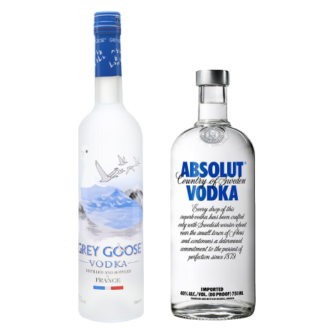
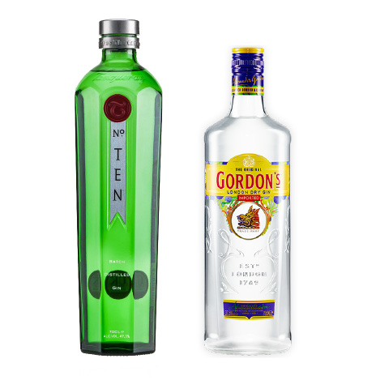
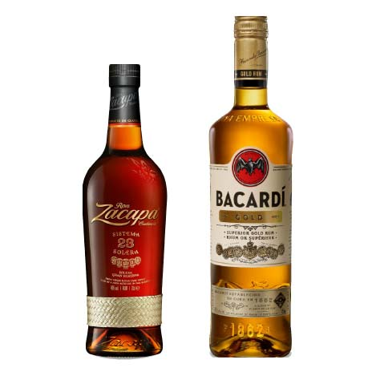

Is it worth it?
Is expensive liqour better than cheap liqour? Our minds associate high price with quality but in reality thats not always the case. Experts at wine and spirits competitions test the products blindly and have no idea what it costs so they can give an unbiased opinion. Surprisingly most of the popular high-end brands get a lower rating than some of their cheaper counterparts. It‘s all about marketing. For example, Belvedere Vodka was not selling very well in the beginning so the logical solution was to put a higher price tag on it of course. Today it is one of the most popular high-end vodka brands.
Vodka

Grey Goose (300kr) vs. Absolut (150kr)
Grey Goose Vodka costs almost twice as much as Absolut Vodka, does the price match the quality? At the San Francisco World Spirits competition Grey Goose got a rating of 82 while Absolut got 94 and has won the gold several times. You can get a bottle of Grey Goose for around 300 kr. while Absolut costs around 150 kr. The high price tag on the Grey Goose is partly because of its 5 distillations process while Absolut is distilled 3 times. The 5 distillations obviously do not result in better taste. Grey Goose is still a quality Vodka but you are better off buying a bottle of Absolut or Smirnoff which also scores higher than Grey Goose while being even cheaper than Absolut.
Gin

The difference is not as obvious when looking at gin, a lot of the high end bottles like Hendricks and Monkey 47 definitely live up to the price tag, but honestly if you‘re just looking for something to make a simple gin and tonic or a Tom Collins you can easily get away with something cheaper. In my experience when making a gin and tonic the quality of the tonic usually matters more than the quality of the gin. But let‘s make comparison anyways.
Tanqueray no.10 (250 kr) vs. Gordons London Dry (150 kr)
At the San Francisco World Spirits competition 2017 Gordon‘s gin was awarded double gold but Tanqueray only got a silver. Like Grey Goose, Tanqueray is distilled more often than Gordon‘s and thus having a higher price tag but the difference in quality is non-existent. I‘m starting to think that this whole multiple distillation thing is partly just a marketing scam. Comparing the two they are almost identical in taste. There is no reason to pay the extra 100 kr for Tanqueray. If you are thirsty for a nice gin and tonic, stick with Gordon‘s or Beefeater and use the money you saved on buying high quality tonic.
Rum

Bacardi Gold (150 kr) vs. Ron Zacapa (350 kr)
Bacardi Gold was awarded a silver medal at the San Fransisco World Spirits competition 2017 and is a pretty standard rum that is good for mixers and cocktails. Ron Zacapa did not compete in the competition but is widely recognized as a premium rum. I think comparing rums can be very tricky since usually the cheaper brands are what you want to get if you are using it for mixers and cocktails but if you want to drink it neat you are better off buying one of the more expensive once since they are usually made with better ingredients. For example Bacardi Gold is distilled from fermented molasses but Ron Zacapa is distilled from fresh cane juice giving it a better, sweeter taste. If you like the taste of rum I‘d recommend Ron Zacapa and drink it neat, it has a very well rounded sweet taste, some lightly sharp notes of orange and banana peel with a mixture of crushed walnuts, and dried fruit. But if you just want a classic nice rum to mix with, you‘re better of with Bacardi Gold or even Bacardi Oakheart.